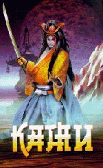

МЕСТНЫЙ ЖИТЕЛЬ
КАМИ

| Раса: |
Человек |
| Пол: |
Мужской
|
| Профессия: |
Самурай |
| Align: |
Lawful-Good |
| Клан: |
Knights |
| Религия: |
Enki |
Давным-давно, когда большинство богов в стране восходящего солнца
были совсем юнными, жил среди них один, которого некоторые из
них звали папой.
Шли времена, в стране появились первые люди,
а некоторые из них стали интересоваться жизнью богов.
Потом как всегда грянули реформы, историки выяснили,
что папа богов - Ками, был как оказалось и не богом
вовсе, а древним героем и императором.
Более поздние исследования показали, что Ками,
вроде и не герой никакой, и может быть даже не
император.
И лишь тайно зародившиеся ниндзя, услышав древнюю
легенду, о том как Ками посылал двух богов в
разведку, за пивом (которого в те древние времена
ни то что в стране восходящего солнца не было,
вообще никто ни знал, где и когда оно бывает)
обьявили его своим покровителем.
Прошло еще много времени, наступило будущее,
начался век НТР и про Ками почти все, почти совсем
позабыли, но поскольку как писал классик "Сколько
от одного убудет - столько к другому присовокупится".
Так и с Ками получилось, чем меньше оставался он
в одном мире, тем больше проявлялся в других...
Так и прижился он в "Shades of Grey Realms".
Стало вновь расти его могущество, но познал он
всю бессмысленность громких титулов.
И жизнь, став смертным, он не только свою стал
ценить, потому и присоединился к клану Рыцарей,
которых одно негодное дитя НТР (по прозвищу
Стилус) обозвало "Полужирными и Благородными"
Ками не обиделся на него - уж очень он пиво любит.